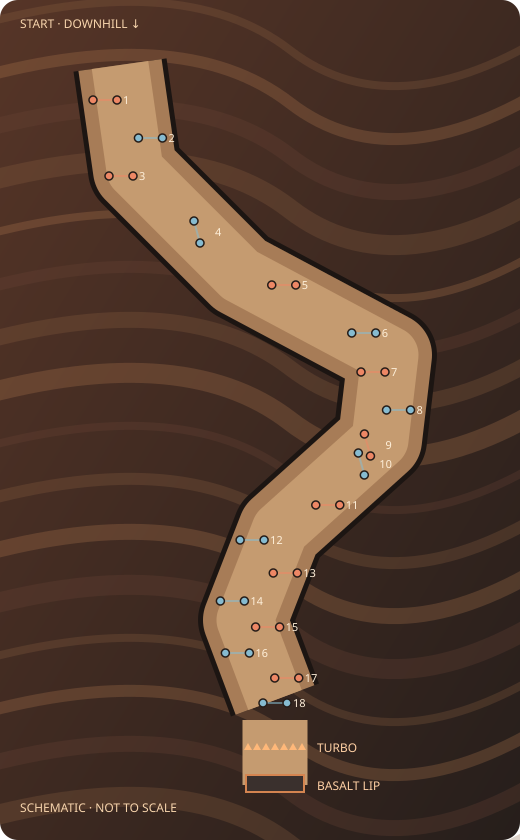

Recommended · best geology + flowStrata traverse
An asymmetric sweep along an exposed layer, a compact turning pocket, then a broad descent into the basin.
18pole gates
28–32 mtarget opening
The sequence
- Three welcoming turns on the upper shoulder
- A delayed turn holds the line across the layers
- Two closed gates tighten the terrace exit
- A broad reverse sweep reveals the basin
- Three regular turns align the launch approach
How it should feel: Commit to a long carve, skim the strata, tighten up briefly, then let the rover run toward the basin.
Spacing and tuning targets
Regular gates: 65–105 m apart along the intended route. Tight combinations: 30–40 m. Long linking turns: 130–170 m. Opening width is the gap between the two poles.
Provisional authoring ranges, not a simulation result. First tune regular turns for roughly 1.5–2 seconds of reaction time, then tighten combinations where lateral movement is small. The current rover’s top speed is too high to copy Olympic spacing directly.
Needs a playtest: The long traverse must remain visibly downhill. Terrain needs shaping so the rover does not stall against a ridge.
SHARED FINISH · KEEP THE APPROVED ARTLast gate → straighten → flat turbo → basalt jump → landing → finish
No gate demands a turn after turbo pickup. Keep the landing and finish clearly visible on approach; set the finish just beyond a safe landing zone after measuring the actual boosted flight. No extra late gate or surprise bend.
Blue and rust dots represent alternating pole pairs. A connecting mark explains each gate opening on this map; no ground line or fabric banner is proposed. The long airborne section is omitted from the diagrams.
Olympics: change the beat
Beijing 2022 men’s slalom used 67 gates in run one over 211 m of vertical drop. FIS course setting mixes regular turns, tight combinations and delayed turns. We should borrow that variety, scaled to rover control.
Beijing event data ↗Steep: readable precision
Ubisoft’s Road to the Olympics treats Slalom as a distinct timed Olympic event alongside larger-turn disciplines. My design inference: let clean steering carry the gate sector, then give the spectacle its own clear finish.
Ubisoft’s event overview ↗1080°: keep the arcade reward
Nintendo’s Contest mode includes three slalom courses, rewarding correct flag passes with time and consecutive-pass points. Our adaptation: satisfying strings of gates and recovery stretches, with the big jump as the payoff.
Nintendo manual, Contest section ↗Why these aren’t just three S-curves
A concentrates the challenge into changing gate rhythms on a compact face. B uses long held turns to travel across the geology, with one brief technical pocket. C separates compact turn sectors with recovery stretches, creating a more learnable arcade rhythm.
I recommend B · Strata traverse for this game. It makes the mountain part of the experience while retaining enough close turns to feel like slalom. A is the stronger precision challenge; C is the easiest to approach as a repeatable speed run.
Research notes, terms and implementation limits
An Olympic hairpin combination means two closed gates, not a 180° road bend. A flush is three or four closed gates in a line. A delayed turn interrupts the regular rhythm with a longer held arc. The USSA manual illustrates these arrangements and recommends predictable opening and finishing gates.
These concepts would need correctly oriented pole pairs and matching crossing detection in the game. The maps show the intended arrangements schematically; a continuous valid skiing line through the closed combinations still needs to be authored and tested.
FIS Alpine rules specify 4–6 m gate openings and generally 6–13 m between successive turning poles, with different rules for combinations. Our much wider openings and longer intervals are deliberate rover adaptations. The proposed along-route intervals above are not the same measurement as FIS turning-pole distances.
Reviewed published rules, course-setting diagrams, Olympic event data and game documentation. This is a design synthesis, not a frame-by-frame gameplay analysis or a reconstruction of a real Olympic track.